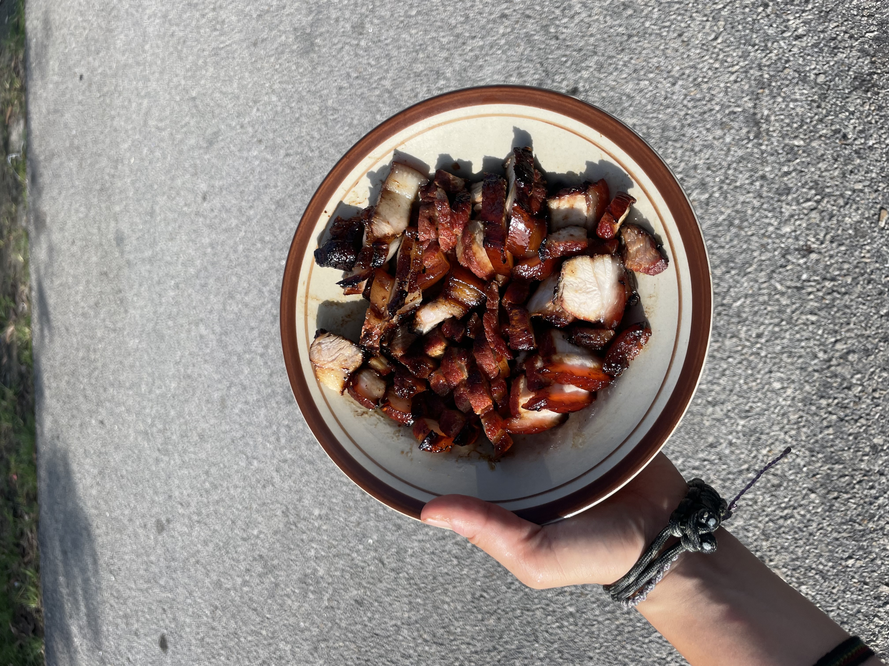

Chinese Char Siu

Description
Char Siu is a popular way to flavor and prepare barbecued pork in Cantonese cuisine. It is classified as a type of siu mei, Cantonese roasted meat. It is typically sweet, salty, and has a distinct red color. Char Siu is used in a variety of dishes, including Char Siu Bao, a popular dim sum dish.
Ingredients
- 1 lb pork shoulder
- 1/4 cup hoisin sauce
- 1/4 cup oyster sauce
- 1/4 cup soy sauce
- 1/4 cup honey
- 1/4 tsp five-spice powder
- 1/4 tsp red food coloring (optional)
- 2 cloves garlic, minced
- 1 tbsp ginger, minced
Steps
- Combine hoisin sauce, oyster sauce, soy sauce, honey, five-spice powder, red food coloring, garlic, and ginger in a bowl.
- Marinate pork shoulder in the sauce for at least 4 hours, preferably overnight.
- Preheat oven to 375°F (190°C).
- Place pork shoulder on a rack in a roasting pan and roast for 30 minutes.
- Brush with marinade and roast for another 30 minutes, or until the pork is cooked through.
- Let the pork rest for 10 minutes before slicing and serving.
Enjoy your delicious Char Siu!
Back to Home